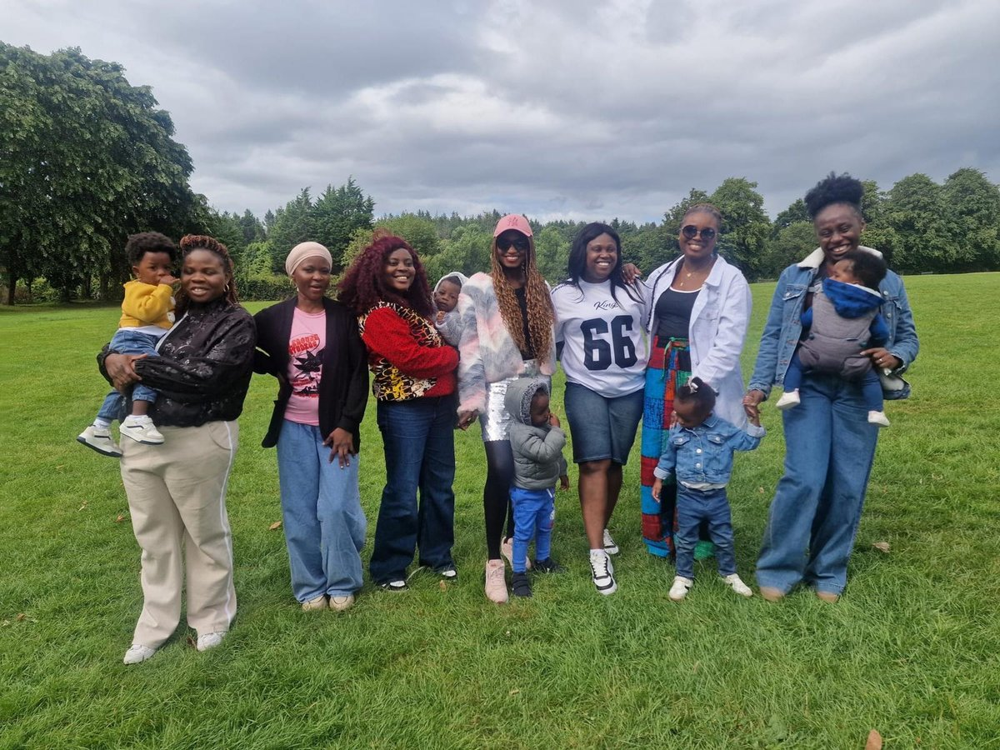
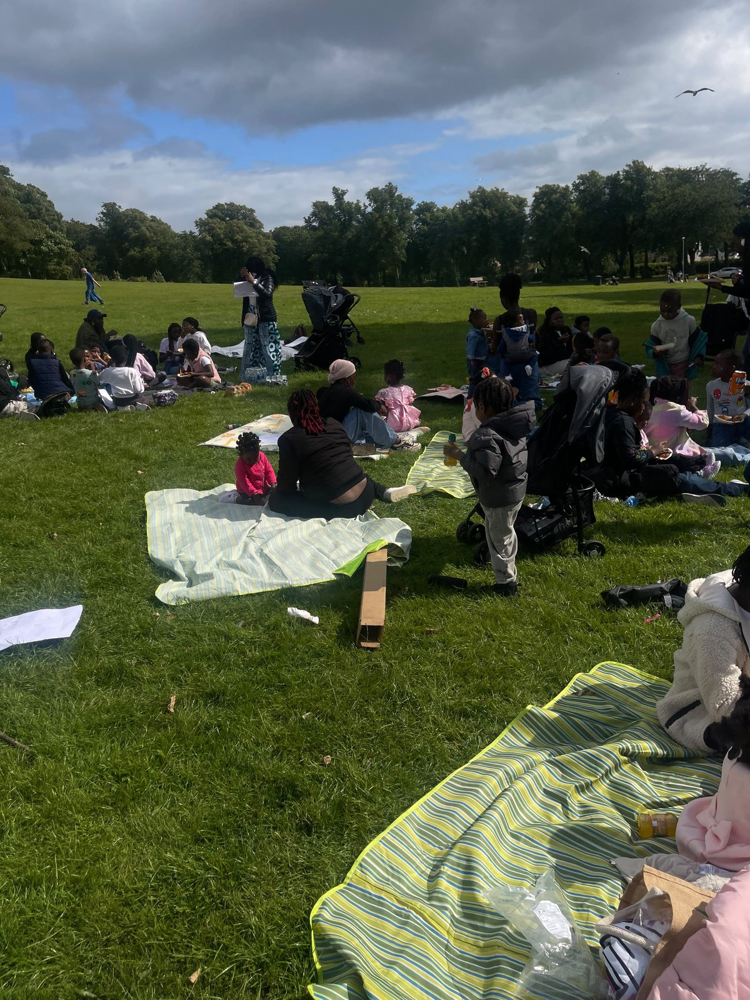

On a beautiful summer day, 1 August 2026, My Baby And I brought together mothers, children, and community members for a joyful summer party at Barshaw Park in Paisley. What unfolded was one of our most memorable community moments yet — a true celebration of togetherness, warmth, and belonging.
Families spread out across the park with picnic blankets, food, laughter and music. Children played freely while mothers caught up, made new friends, and simply enjoyed a rare moment of collective joy in the open air.

The My Baby And I community gathered at Barshaw Park — mothers, children and volunteers celebrating together
A community that shows up
The turnout was a wonderful reflection of how much our community has grown. Mothers who had never met before were sharing food, swapping parenting tips, and exchanging numbers. Children were making friends on the grass. It was everything My Baby And I stands for — connection made real.


Mothers with babies and young children enjoying the afternoon at Barshaw Park
What's coming next
Following the success of this summer gathering, we have an exciting series of events planned. Our next session is a Women's Empowerment Workshop on Saturday 3 October 2026 — an inspiring in-person session exploring Identity, Motherhood and Wellbeing, the first in a programme running through to August 2027.
All our events are free, welcoming, and designed around the real needs of ethnic minority mothers and their families. Free childminding is available.